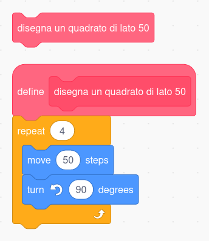
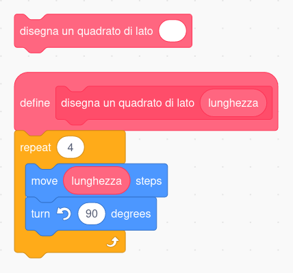
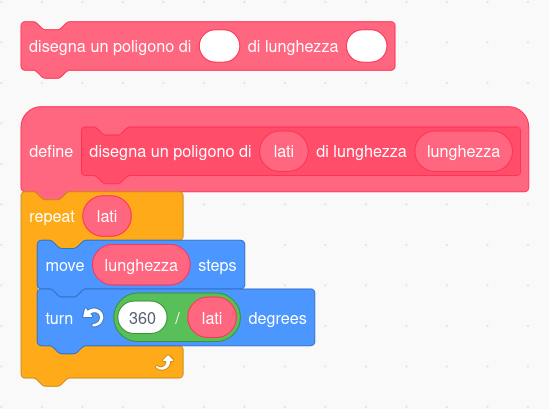

class: center, middle .title-header[Civiform] .title[Coding e Robotica] .subtitle[per l’innovazione sociale] .title-footer[Cividale, gennaio-febbraio 2022] --- class: center, middle .title[Estensione “penna”] --- # Blocchi personalizzati --- class: center, middle .center[] .illustration[ Blocco personalizzato] --- class: center, middle .center[] .illustration[ Blocco personalizzato parametrico] --- class: center, middle .center[] .illustration[ Blocco personalizzato multi-parametrico] --- # Blocchi personalizzati -- * permettono di nascondere i dettagli implementativi -- * aumentano la leggibilità del codice -- * riducono il tasso di ripetitività del programma -- * consentono di suddividerlo in unità logicamente separate --- class: center, middle .title[Mondo Sommerso] --- # Movimento degli sprite -- * guidare lo sprite con il mouse -- ```cpp /* per sempre punta verso (puntatore del mouse) fai (5) passi ``` --- # Movimento degli sprite * guidare lo sprite con il mouse * rotazione e avanzamento, da tastiera -- ```cpp /* per sempre se <tasto [freccia sinistra] premuto> allora ruota ↺ di (10) gradi se <tasto [freccia destra] premuto> allora ruota ↻ di (10) gradi se <tasto [spazio] premuto> allora fai (5) passi ``` --- # Movimento degli sprite * guidare lo sprite con il mouse * rotazione e avanzamento, da tastiera * movimento lungo le coordinate cartesiane (da tastiera) --- # Movimento degli sprite * movimento lungo le coordinate cartesiane (da tastiera) ```cpp /* per sempre se <tasto [freccia sinistra] premuto> allora cambia x di (-5) se <tasto [freccia destra] premuto> allora cambia x di (5) se <tasto [freccia su] premuto> allora cambia y di (5) se <tasto [freccia giù] premuto> allora cambia y di (-5) ``` --- # Movimento degli sprite * guidare lo sprite con il mouse * rotazione e avanzamento, da tastiera * movimento lungo le coordinate cartesiane (da tastiera) -- .important[ impostare lo stile di rotazione più adatto<br>in fase di inizializzazione!] --- # Coding con Scrach -- * animazione degli sprite con .keyword[passa al costume] -- * gestione delle collisioni tra sprite con .keyword[sta toccando] -- * conto alla rovescia con .keyword[attendi (1) secondi] -- * comunicazione tra sprite con .keyword[invia a tutti (…) e attendi] --- class: center, middle .title[Cloni] --- # Lucciole sincrone -- * articolo: [A surreal synchronised wave of light](https://www.bbc.com/travel/article/20170112-a-surreal-synchronised-wave-of-light) (BBC) -- * video: [Fireflies Glowing in Sync](https://youtu.be/0BOjTMkyfIA) (National Geographic) -- * simulazione: [“Fireflies”](https://ncase.me/fireflies/) (Nicky Case) --- class: center, middle .title[Liste] --- # Lista della spesa -- .important[ **Scorrimento della lista**] --- ```cpp /* LISTA DELLA SPESA ┌───────────┐ │ mele │ ├───────────┤ │ latte │ ├───────────┤ │ formaggio │ ├───────────┤ │ pane │ ├───────────┤ ┊ ┊ . ``` --- ```cpp /* LISTA DELLA SPESA ┌───────────┐ 1 │ mele │ ├───────────┤ 2 │ latte │ ├───────────┤ 3 │ formaggio │ ├───────────┤ 4 │ pane │ ├───────────┤ ┊ ┊ . ``` .illustration[ Ad ogni elemento della lista è associato un numero.] --- ```cpp /* ┌───┐ LISTA DELLA SPESA POSIZIONE: │ 1 │ ┌───────────┐ └───┘ 1 │ mele │ ├───────────┤ 2 │ latte │ ├───────────┤ 3 │ formaggio │ ├───────────┤ 4 │ pane │ ├───────────┤ ┊ ┊ . ``` .illustration[ Una variabile ausiliaria viene usata per scorrere la lista.] --- ```cpp /* ┌───┐ LISTA DELLA SPESA POSIZIONE: │ 1 ├────┐ ┌───────────┐ └───┘ └────────────► 1 │ mele │ ├───────────┤ 2 │ latte │ ├───────────┤ 3 │ formaggio │ ├───────────┤ 4 │ pane │ ├───────────┤ ┊ ┊ . ``` .illustration[ La variabile contiene l’indice dell’elemento da considerare.] --- ```cpp /* ┌───┐ LISTA DELLA SPESA POSIZIONE: │ 2 ├────┐ ┌───────────┐ └───┘ │ 1 │ mele │ │ ├───────────┤ └────────────► 2 │ latte │ ├───────────┤ 3 │ formaggio │ ├───────────┤ 4 │ pane │ ├───────────┤ ┊ ┊ . ``` .illustration[ Lo scorrimento si ottiene incrementando il valore della variabile.] --- ```cpp /* ┌───┐ LISTA DELLA SPESA POSIZIONE: │ 3 ├────┐ ┌───────────┐ └───┘ │ 1 │ mele │ │ ├───────────┤ │ 2 │ latte │ │ ├───────────┤ └────────────► 3 │ formaggio │ ├───────────┤ 4 │ pane │ ├───────────┤ ┊ ┊ . ``` .illustration[ Lo scorrimento si ottiene incrementando il valore della variabile.] --- ```cpp /* ┌───┐ LISTA DELLA SPESA POSIZIONE: │ 4 ├────┐ ┌───────────┐ └───┘ │ 1 │ mele │ │ ├───────────┤ │ 2 │ latte │ │ ├───────────┤ │ 3 │ formaggio │ │ ├───────────┤ └────────────► 4 │ pane │ ├───────────┤ ┊ ┊ . ``` .illustration[ Lo scorrimento si ottiene incrementando il valore della variabile.] --- ```cpp /* ┌────┐ LISTA DELLA SPESA POSIZIONE: │ 18 ├───┐ └────┘ │ 15 ┊ pasta ┊ │ ├───────────┤ │ 16 │ banane │ │ ├───────────┤ │ 17 │ detersivo │ │ ├───────────┤ └───────────► 18 │ insalata │ └───────────┘ . ``` .illustration[ Lo scorrimento termina quando si raggiunge il termine della lista.] --- # Agenda telefonica -- .important[ **Ricerca per nome**] --- ```cpp /* NOMI TELEFONI ┌───────────┐ ┌────────────┐ │ alberto │ │ 333.123456 │ ├───────────┤ ├────────────┤ │ bruno │ │ 333.112233 │ ├───────────┤ ├────────────┤ │ cristiano │ │ 333.111222 │ ├───────────┤ ├────────────┤ │ danilo │ │ 333.123123 │ ├───────────┤ ├────────────┤ ┊ ┊ ┊ ┊ . ``` .illustration[ Nome e numero occupano la stessa posizione in lista.] --- ```cpp /* NOMI TELEFONI ┌───────────┐ ┌────────────┐ 1 │ alberto │ 1 │ 333.123456 │ ├───────────┤ ├────────────┤ 2 │ bruno │ 2 │ 333.112233 │ ├───────────┤ ├────────────┤ 3 │ cristiano │ 3 │ 333.111222 │ ├───────────┤ ├────────────┤ 4 │ danilo │ 4 │ 333.123123 │ ├───────────┤ ├────────────┤ ┊ ┊ ┊ ┊ . ``` .illustration[ Nome e numero condividono lo stesso indice.] --- ```cpp /* NOMI TELEFONI ┌───────────┐ ┌────────────┐ 1 │ alberto │ 1 │ 333.123456 │ ├───────────┤ ├────────────┤ 2 │ bruno │ 2 │ 333.112233 │ ├───────────┤ ├────────────┤ 3 │ cristiano │ 3 │ 333.111222 │ ├───────────┤ ├────────────┤ 4 │ danilo │ 4 │ 333.123123 │ ├───────────┤ ├────────────┤ ┊ ┊ ┊ ┊ . ``` .illustration[ Il blocco “posizione di (cosa) in [lista]” ritorna l’indice dell’elemento cercato.] --- ```cpp /* NOMI TELEFONI ┌───────────┐ ┌────────────┐ 1 │ alberto │ 1 │ 333.123456 │ ├───────────┤ ├────────────┤ 2 │ bruno │ 2 │ 333.112233 │ ├───────────┤ ├────────────┤ 3 │ cristiano │ 3 │ 333.111222 │ ├───────────┤ ├────────────┤ 4 │ danilo │ 4 │ 333.123123 │ ├───────────┤ ├────────────┤ ┊ ┊ ┊ ┊ . ``` .illustration[ Cone risalire al numero di telefono di Bruno?] --- ```cpp /* NOMI TELEFONI ┌───────────┐ ┌────────────┐ 1 │ alberto │ 1 │ 333.123456 │ ╔═══════════╗ ├────────────┤ ────────► 2 ║ bruno ║ 2 │ 333.112233 │ ╚═══════════╝ ├────────────┤ 3 │ cristiano │ 3 │ 333.111222 │ ├───────────┤ ├────────────┤ 4 │ danilo │ 4 │ 333.123123 │ ├───────────┤ ├────────────┤ ┊ ┊ ┊ ┊ . ``` .illustration[ “posizione di (bruno) in [NOMI]” ritorna 2.] --- ```cpp /* NOMI TELEFONI ┌───────────┐ ┌────────────┐ 1 │ alberto │ 1 │ 333.123456 │ ╔═══════════╗ ╔════════════╗ ────────► 2 ║ bruno ║ ───────────► 2 ║ 333.112233 ║ ╚═══════════╝ ╚════════════╝ 3 │ cristiano │ 3 │ 333.111222 │ ├───────────┤ ├────────────┤ 4 │ danilo │ 4 │ 333.123123 │ ├───────────┤ ├────────────┤ ┊ ┊ ┊ ┊ . ``` .illustration[ Con il medesimo indice si accede alla lista TELEFONI.] --- ```cpp /* NOMI TELEFONI ┌───────────┐ ┌────────────┐ 1 │ alberto │ 1 │ 333.123456 │ ╔═══════════╗ ╔════════════╗ * ────────► 2 ║ bruno ║ ───────────► 2 ║ 333.112233 ║ ╚═══════════╝ ╚════════════╝ 3 │ cristiano │ 3 │ 333.111222 │ ├───────────┤ ├────────────┤ 4 │ danilo │ 4 │ 333.123123 │ ├───────────┤ ├────────────┤ ┊ ┊ ┊ ┊ . ``` .illustration[ La soluzione è “elemento (posizione di (bruno) in [NOMI]) di [TELEFONI]”.] --- class: center, middle .title[Stringhe] --- # Stringhe -- * liste di caratteri -- * operazioni analoghe a quelle delle liste -- * si applicano le medesime tecniche --- # Stringhe **Esercizi** -- * scandire una alla volta le lettere di una stringa -- * controllare se una stringa contiene il punto esclamativo -- * contare quante **s** contiene una stringa -- * contare quante vocali contiene una stringa -- * riscrivere una stringa al contrario --- # Stringhe .important[ Verificare se una stringa è palindroma] --- # Palindromi * realizzare una doppia scansione della stringa -- * un indice parte sul primo carattere, l’altro sull’ultimo -- * il primo avanza verso il carattere centrale della stringa… -- * … l’altro retrocede verso lo stesso punto -- * se si trovano due caratteri diversi allora… --- # Stringhe .important[ Cifrario di Cesare] --- ```cpp /* ALFABETO IN CHIARO ┌───┬───┬───┬───┬───┬───┬───┬───┬───┬┄ ┄┬───┬───┬───┐ │ a │ b │ c │ d │ e │ f │ g │ h │ i │ │ x │ y │ z │ └───┴───┴───┴───┴───┴───┴───┴───┴───┴┄ ┄┴───┴───┴───┘ ALFABETO CIFRATO ┌───┬───┬───┬───┬───┬───┬───┬───┬───┬┄ ┄┬───┬───┬───┐ │ d │ e │ f │ g │ h │ i │ j │ k │ l │ │ a │ b │ c │ └───┴───┴───┴───┴───┴───┴───┴───┴───┴┄ ┄┴───┴───┴───┘ TESTO DA CIFRARE...: bacche TESTO CIFRATO......: . ``` .illustration[ Inizialmente il testo cifrato è vuoto.] --- ```cpp /* ALFABETO IN CHIARO ┌───┬───┬───┬───┬───┬───┬───┬───┬───┬┄ ┄┬───┬───┬───┐ │ a │ b │ c │ d │ e │ f │ g │ h │ i │ │ x │ y │ z │ └───┴───┴───┴───┴───┴───┴───┴───┴───┴┄ ┄┴───┴───┴───┘ ALFABETO CIFRATO ┌───┬───┬───┬───┬───┬───┬───┬───┬───┬┄ ┄┬───┬───┬───┐ │ d │ e │ f │ g │ h │ i │ j │ k │ l │ │ a │ b │ c │ └───┴───┴───┴───┴───┴───┴───┴───┴───┴┄ ┄┴───┴───┴───┘ TESTO DA CIFRARE...: bacche ^ TESTO CIFRATO......: . ``` .illustration[ Si effettua una scansione del testo da cifrare.] --- ```cpp /* ALFABETO IN CHIARO ┌───╔═══╗───┬───┬───┬───┬───┬───┬───┬┄ ┄┬───┬───┬───┐ │ a ║ b ║ c │ d │ e │ f │ g │ h │ i │ │ x │ y │ z │ └───╚═══╝───┴───┴───┴───┴───┴───┴───┴┄ ┄┴───┴───┴───┘ 2 ALFABETO CIFRATO ┌───┬───┬───┬───┬───┬───┬───┬───┬───┬┄ ┄┬───┬───┬───┐ │ d │ e │ f │ g │ h │ i │ j │ k │ l │ │ a │ b │ c │ └───┴───┴───┴───┴───┴───┴───┴───┴───┴┄ ┄┴───┴───┴───┘ TESTO DA CIFRARE...: bacche ^ TESTO CIFRATO......: . ``` .illustration[ Si individua la posizione del carattere da cifrare nell’alfabeto in chiaro.] --- ```cpp /* ALFABETO IN CHIARO ┌───╔═══╗───┬───┬───┬───┬───┬───┬───┬┄ ┄┬───┬───┬───┐ │ a ║ b ║ c │ d │ e │ f │ g │ h │ i │ │ x │ y │ z │ └───╚═══╝───┴───┴───┴───┴───┴───┴───┴┄ ┄┴───┴───┴───┘ 2 ALFABETO CIFRATO ┌───╔═══╗───┬───┬───┬───┬───┬───┬───┬┄ ┄┬───┬───┬───┐ │ d ║ e ║ f │ g │ h │ i │ j │ k │ l │ │ a │ b │ c │ └───╚═══╝───┴───┴───┴───┴───┴───┴───┴┄ ┄┴───┴───┴───┘ 2 TESTO DA CIFRARE...: bacche ^ TESTO CIFRATO......: . ``` .illustration[ Si identifica il carattere corrispondente nell’alfabeto cifrato.] --- ```cpp /* ALFABETO IN CHIARO ┌───╔═══╗───┬───┬───┬───┬───┬───┬───┬┄ ┄┬───┬───┬───┐ │ a ║ b ║ c │ d │ e │ f │ g │ h │ i │ │ x │ y │ z │ └───╚═══╝───┴───┴───┴───┴───┴───┴───┴┄ ┄┴───┴───┴───┘ 2 ALFABETO CIFRATO ┌───╔═══╗───┬───┬───┬───┬───┬───┬───┬┄ ┄┬───┬───┬───┐ │ d ║ e ║ f │ g │ h │ i │ j │ k │ l │ │ a │ b │ c │ └───╚═══╝───┴───┴───┴───┴───┴───┴───┴┄ ┄┴───┴───┴───┘ 2 TESTO DA CIFRARE...: bacche ^ TESTO CIFRATO......: e . ``` .illustration[ Si aggiunge il carattere trovato al testo cifrato.] --- ```cpp /* ALFABETO IN CHIARO ╔═══╗───┬───┬───┬───┬───┬───┬───┬───┬┄ ┄┬───┬───┬───┐ ║ a ║ b │ c │ d │ e │ f │ g │ h │ i │ │ x │ y │ z │ ╚═══╝───┴───┴───┴───┴───┴───┴───┴───┴┄ ┄┴───┴───┴───┘ 1 ALFABETO CIFRATO ╔═══╗───┬───┬───┬───┬───┬───┬───┬───┬┄ ┄┬───┬───┬───┐ ║ d ║ e │ f │ g │ h │ i │ j │ k │ l │ │ a │ b │ c │ ╚═══╝───┴───┴───┴───┴───┴───┴───┴───┴┄ ┄┴───┴───┴───┘ 1 TESTO DA CIFRARE...: bacche ^ TESTO CIFRATO......: ed . ``` .illustration[ Si applica lo stesso procedimento al carattere successivo.] --- ```cpp /* ALFABETO IN CHIARO ┌───┬───╔═══╗───┬───┬───┬───┬───┬───┬┄ ┄┬───┬───┬───┐ │ a │ b ║ c ║ d │ e │ f │ g │ h │ i │ │ x │ y │ z │ └───┴───╚═══╝───┴───┴───┴───┴───┴───┴┄ ┄┴───┴───┴───┘ 3 ALFABETO CIFRATO ┌───┬───╔═══╗───┬───┬───┬───┬───┬───┬┄ ┄┬───┬───┬───┐ │ d │ e ║ f ║ g │ h │ i │ j │ k │ l │ │ a │ b │ c │ └───┴───╚═══╝───┴───┴───┴───┴───┴───┴┄ ┄┴───┴───┴───┘ 3 TESTO DA CIFRARE...: bacche ^ TESTO CIFRATO......: edf . ``` .illustration[ Si applica lo stesso procedimento al carattere successivo.] --- ```cpp /* ALFABETO IN CHIARO ┌───┬───╔═══╗───┬───┬───┬───┬───┬───┬┄ ┄┬───┬───┬───┐ │ a │ b ║ c ║ d │ e │ f │ g │ h │ i │ │ x │ y │ z │ └───┴───╚═══╝───┴───┴───┴───┴───┴───┴┄ ┄┴───┴───┴───┘ 3 ALFABETO CIFRATO ┌───┬───╔═══╗───┬───┬───┬───┬───┬───┬┄ ┄┬───┬───┬───┐ │ d │ e ║ f ║ g │ h │ i │ j │ k │ l │ │ a │ b │ c │ └───┴───╚═══╝───┴───┴───┴───┴───┴───┴┄ ┄┴───┴───┴───┘ 3 TESTO DA CIFRARE...: bacche ^ TESTO CIFRATO......: edff . ``` .illustration[ Si applica lo stesso procedimento al carattere successivo.] --- ```cpp /* ALFABETO IN CHIARO ┌───┬───┬───┬───┬───┬───┬───╔═══╗───┬┄ ┄┬───┬───┬───┐ │ a │ b │ c │ d │ e │ f │ g ║ h ║ i │ │ x │ y │ z │ └───┴───┴───┴───┴───┴───┴───╚═══╝───┴┄ ┄┴───┴───┴───┘ 8 ALFABETO CIFRATO ┌───┬───┬───┬───┬───┬───┬───╔═══╗───┬┄ ┄┬───┬───┬───┐ │ d │ e │ f │ g │ h │ i │ j ║ k ║ l │ │ a │ b │ c │ └───┴───┴───┴───┴───┴───┴───╚═══╝───┴┄ ┄┴───┴───┴───┘ 8 TESTO DA CIFRARE...: bacche ^ TESTO CIFRATO......: edffk . ``` .illustration[ Si applica lo stesso procedimento al carattere successivo.] --- ```cpp /* ALFABETO IN CHIARO ┌───┬───┬───┬───╔═══╗───┬───┬───┬───┬┄ ┄┬───┬───┬───┐ │ a │ b │ c │ d ║ e ║ f │ g │ h │ i │ │ x │ y │ z │ └───┴───┴───┴───╚═══╝───┴───┴───┴───┴┄ ┄┴───┴───┴───┘ 5 ALFABETO CIFRATO ┌───┬───┬───┬───╔═══╗───┬───┬───┬───┬┄ ┄┬───┬───┬───┐ │ d │ e │ f │ g ║ h ║ i │ j │ k │ l │ │ a │ b │ c │ └───┴───┴───┴───╚═══╝───┴───┴───┴───┴┄ ┄┴───┴───┴───┘ 5 TESTO DA CIFRARE...: bacche ^ TESTO CIFRATO......: edffkh . ``` .illustration[ Giunti all’ultimo carattere, il testo risulta completamente cifrato.] --- # Cifrario di Cesare .center[ .process[bacche → edffkh]] -- .important[ Come si decodifica “edffkh”?] --- # Cifrario di Cesare .center[ .process[bacche → edffkh]] .important[ Scambiando di ruolo i due alfabeti!] --- # Cifrario di Cesare **Nota**: per realizzare il cifrario sono necessari due cicli annidati: il primo che scandisce i caratteri del testo da cifrare, il secondo che identifica la posizione del carattere all’interno dell’alfabeto in chiaro. Nascondere il ciclo più interno in un blocco personalizzato.